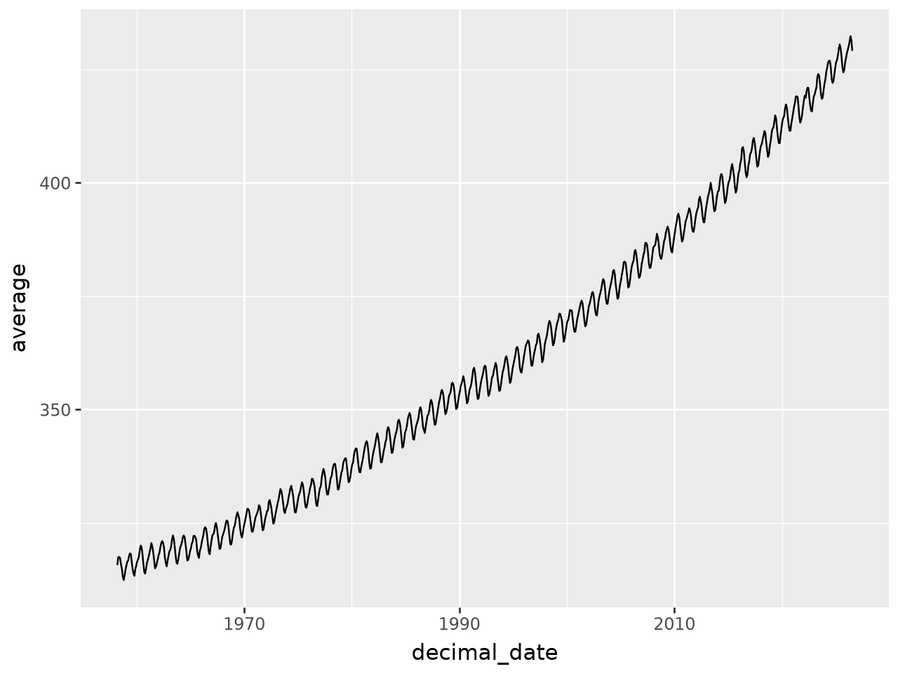

import pandas as pd
from plotnine import *Unit I: Climate Change Module
Reproducing the hockey stick, and checking whether we got it right
We reproduced the famous hockey stick curve from Mann et al (1998).
Rules of engagement
- Plan mode only. You review and approve the plan before any code runs.
- Keep your prompts. Record what you asked for. The prompt is part of your method.
- Never report a number you have not checked. Unverified or fabricated data is the one automatic-failure condition in this module, and it is no less serious because a model produced it.
Setup, GitHub authentication, and model configuration are on the course website.
Verification block
Every dataset gets these five questions answered, in your own words, before you plot it. Each part below ends with one.
- Extent — how many rows, what time range, and does that match the source documentation?
- Missing data — how is it encoded, and did your parser catch it?
- Units — what are they, and where in the source is that stated?
- Completeness — the whole dataset, or one piece of it?
- Cross-check — one value confirmed against an independent source.
Part 1: The code you didn’t write
Mauna Loa monthly CO2: https://gml.noaa.gov/webdata/ccgg/trends/co2/co2_mm_mlo.txt
Below is working code for that file. It runs and it produces a plausible plot.
columns = ['year', 'month', 'decimal_date', 'average', 'smooth', 'std_days', 'uncertainty', 'empty']
df = pd.read_csv("https://gml.noaa.gov/webdata/ccgg/trends/co2/co2_mm_mlo.txt",
sep = '\s+',
comment = '#',
header = None,
names = columns
)
df<>:3: SyntaxWarning: "\s" is an invalid escape sequence. Such sequences will not work in the future. Did you mean "\\s"? A raw string is also an option.
<>:3: SyntaxWarning: "\s" is an invalid escape sequence. Such sequences will not work in the future. Did you mean "\\s"? A raw string is also an option.
/tmp/ipykernel_1469/60946832.py:3: SyntaxWarning: "\s" is an invalid escape sequence. Such sequences will not work in the future. Did you mean "\\s"? A raw string is also an option.| year | month | decimal_date | average | smooth | std_days | uncertainty | empty | |
|---|---|---|---|---|---|---|---|---|
| 0 | 1958 | 3 | 1958.2027 | 315.71 | 314.44 | -1 | -9.99 | -0.99 |
| 1 | 1958 | 4 | 1958.2877 | 317.45 | 315.16 | -1 | -9.99 | -0.99 |
| 2 | 1958 | 5 | 1958.3699 | 317.51 | 314.69 | -1 | -9.99 | -0.99 |
| 3 | 1958 | 6 | 1958.4548 | 317.27 | 315.15 | -1 | -9.99 | -0.99 |
| 4 | 1958 | 7 | 1958.5370 | 315.87 | 315.20 | -1 | -9.99 | -0.99 |
| ... | ... | ... | ... | ... | ... | ... | ... | ... |
| 816 | 2026 | 3 | 2026.2083 | 430.15 | 428.69 | 26 | 0.87 | 0.33 |
| 817 | 2026 | 4 | 2026.2917 | 431.12 | 428.62 | 23 | 1.16 | 0.46 |
| 818 | 2026 | 5 | 2026.3750 | 432.34 | 429.05 | 17 | 0.67 | 0.31 |
| 819 | 2026 | 6 | 2026.4583 | 431.44 | 429.04 | 19 | 0.28 | 0.12 |
| 820 | 2026 | 7 | 2026.5417 | 429.12 | 428.83 | 21 | 0.59 | 0.25 |
821 rows × 8 columns
ggplot(df, aes(x="decimal_date", y="average")) + geom_line()
Task 1.1: Read the source, not the code
That columns list was written by hand. Open the raw file and read its header block, then check every name against what the header says the column holds. Report any that misstate it, and say which of those would change a published figure if nobody noticed.
Your answer:
Task 1.2: Missing values
How does this file encode a measurement that was not made? Verify it in the raw file, count the affected rows per column, and say what a naive mean(), min(), or error bar would report if you left them in. State what you did about it and why.
Your answer:
Task 1.3: What the numeric columns cannot tell you
The header block contains prose notes as well as column definitions. Read them.
Does anything there change how you would plot or interpret this series? Show your evidence in the data rather than asserting it, and say whether a model reading only the numeric columns would have any way to know.
Your answer:
Task 1.4: Check whether a better door exists
Before you fix a parser, find out whether you need one. NOAA distributes this same monthly record in more than one format: https://gml.noaa.gov/ccgg/trends/data.html
Load an alternative distribution. Which of the problems you found above does switching formats solve, and which does it not?
Your answer:
Task 1.5: The other library
Now try to load the original .txt with ibis instead of pandas. Report what happens.
Explain the result in terms of the file, not the library. What does it do to a rule like “always use ibis”?
Your answer:
🔍 Verification block 1
- Extent:
- Missing data:
- Units:
- Completeness:
- Cross-check:
Part 2: Arctic sea ice
National Snow and Ice Data Center, sea ice index G02135:
- Documentation: https://nsidc.org/data/G02135
- Data directory: https://noaadata.apps.nsidc.org/NOAA/G02135/north/monthly/data/
Task 2.1: Ask first, look second
Before opening that directory yourself, ask your model to load Arctic sea ice extent and plot the trend. Let it produce a plan.
Record the prompt you used:
[paste your prompt here]Task 2.2: What did it actually load?
Now open the data directory and look at what is there.
Check the URL the model’s code used against the directory listing before you run anything. Did it point at a file that exists? If it ran, how much of the record does the plot actually show, and is the title honest? If it failed, would you have predicted that failure from reading the code?
A model that has never seen this directory still has to produce a filename. Note where it got one.
Your answer:
Task 2.3: Build the complete record
Load the full dataset and plot sea ice extent over time.
Then make a scientific decision and defend it: the September minimum is the standard index for Arctic sea ice loss, and it is not the same thing as the annual mean. Which does your analysis report, and why is that right for the question you are asking?
Your answer:
🔍 Verification block 2
- Extent:
- Missing data:
- Units:
- Completeness:
- Cross-check:
Part 3: Emissions by industry
EXIOBASE is a multi-regional, environmentally-extended input-output database: economic flows between industries and regions worldwide, with the emissions attached to them. It lets you ask which industries drive emissions, not just which countries.
We use the cloud-optimized Parquet copy at source.coop/youssef-harby/exiobase-3. The inter-industry transaction table Z for one year:
https://data.source.coop/youssef-harby/exiobase-3/4588235/parquet/year=2022/format=ixi/matrix=Z/data.parquetTask 3.1: Ask without guidance
Ask your model to compute total industrial output by origin region for 2022 from that file. Do not tell it which library to use.
Record the prompt you used:
[paste your prompt here]Which library did it choose, unprompted?
Task 3.2: Measure what it cost
Run the code it wrote inside the harness below, which reports peak memory and wall time. Your session has roughly 4 GB of RAM. Report what happens, including if it does not finish.
import resource, time, contextlib
@contextlib.contextmanager
def measure(label):
t0 = time.time()
try:
yield
finally:
peak = resource.getrusage(resource.RUSAGE_SELF).ru_maxrss / 1024**2
print(f"{label}: peak memory {peak:.2f} GB, elapsed {time.time() - t0:.1f}s")
# with measure("pandas"):
# result = ...Task 3.3: Now constrain it
Ask again, this time requiring ibis with the DuckDB backend. Measure the same way.
| approach | peak memory | elapsed | did it finish? |
|---|---|---|---|
| unguided | |||
| ibis / duckdb |
Do the two approaches give the same answer? Check, do not assume. If they disagree, that is a finding worth more than either number alone.
Task 3.4: Why did it choose that?
Why does a model, asked to analyze data with no further guidance, reach for the library it reached for? Consider what its training data looks like.
- What does it mean that the tool most likely to be suggested is the one most represented in code written years ago?
- On the evidence of this exercise, what is the human actually contributing?
- What would have happened if nobody in the room knew the alternative existed?
- In Task 1.5 you found the reverse case. State the rule that covers both, without naming a library.
Your answer:
Part 4: Which CO2?
The F_satellite table holds the environmental extensions — emissions and resource flows attached to each industry and region.
https://data.source.coop/youssef-harby/exiobase-3/4588235/parquet/year=2022/format=ixi/matrix=F_satellite/data.parquetTask 4.1: Survey before you filter
Load the table. Before writing any filter, report how many distinct values the stressor column contains, how many of them mention CO2 (with their units and totals), and how many distinct units appear in the unit column across the whole table.
Your answer:
Task 4.2: What did you just add together?
Group by region and sum value across all stressors. Then look at what that sum contains.
How many different units went into it? Is the result a mass, a volume, a currency, or a number with no meaning? What is the ratio between the two most common units, and what would mixing them do to a national total?
Your answer:
Task 4.3: Choose your stressors, and defend the choice
Compute total CO2 emissions by region for 2022.
You must decide which stressors belong in that total. This is a scientific judgment, not a string-matching exercise: filtering too narrowly omits real emissions, and matching every name containing "CO2" includes flows that standard greenhouse-gas accounting deliberately excludes. Find out which, and on what grounds.
Ask your model which to include, then check its reasoning against the accounting convention.
Which stressors did you include, and why? Which did you exclude, and why?
Task 4.4: Reconcile against an independent source
Compare your EXIOBASE national totals against Our World in Data: https://github.com/owid/co2-data/raw/master/owid-co2-data.csv
They will not match. Pick one country and quantify the gap:
| value | units | |
|---|---|---|
| OWID total | ||
| Your EXIOBASE total | ||
| Absolute difference | ||
| Relative difference |
Then explain it. The two sources do not measure the same thing — establish what each one actually counts before you attribute the gap to anything. Candidates to test rather than assert: accounting scope, gas coverage, sectoral boundaries, your stressor set from 4.3, and year alignment.
A country that imports most of its manufactured goods should show a particular direction of gap. Does yours? What does that tell you about the two accounting systems?
Your reconciliation:
🔍 Verification block 3
- Extent:
- Missing data:
- Units:
- Completeness:
- Cross-check:
Part 5: The hockey stick
Instrumental records cover roughly the last century and a half. To judge whether recent change is unusual you need a longer baseline, which means proxy records rather than thermometers.
Vostok ice core, back roughly 400,000 years:
- Description: https://cdiac.ess-dive.lbl.gov/trends/co2/vostok.html
- Data: https://doi.org/10.3334/CDIAC/ATG.009
Task 5.1: Load the ice core record
Load it, and read its documentation carefully enough to say what its index actually is and how it is sampled. Both bear on what you can legitimately plot next to a modern monthly series.
Task 5.2: Put modern CO2 in geological context
Combine the Vostok record with the Mauna Loa series from Part 1 in a single figure.
Getting this figure to be honest is the hard part:
- The two series have very different sampling resolution. What does a shared axis imply that may not be true?
- Where do the records join, and are they measuring the same quantity the same way?
- What does the modern value look like against the full 400,000-year range?
Task 5.3: Interpret
Relative to Mann et al (1998):
- Does your reconstruction support the paper’s central claim?
- Where does it differ, and why — more recent data, different proxies, different processing?
- What in your figure is a genuine finding, and what is an artifact of a choice you made?
Your interpretation:
Part 6: Reflection
- Failure inventory. List every case where the model produced code that ran without error but was wrong. What was wrong, and what tipped you off?
- Detection. Which of those would you have caught from the plot alone? Which required going back to the source documentation?
- Division of labor. What did you contribute that the model did not? If the answer for some task is “nothing”, say so.
- Plan mode. Where did approving the plan catch something? Where was it just friction?
- Tool choice. You have now seen the same task done two ways, and data read locally versus streamed. What decides which is right, and who makes that decision?
Your reflection:
Submission
See rubric.md for scoring.